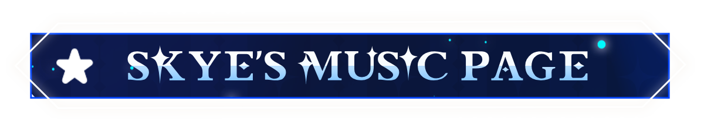
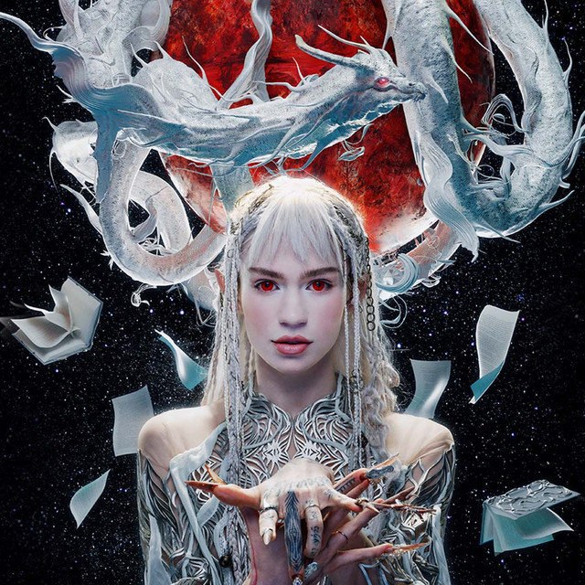
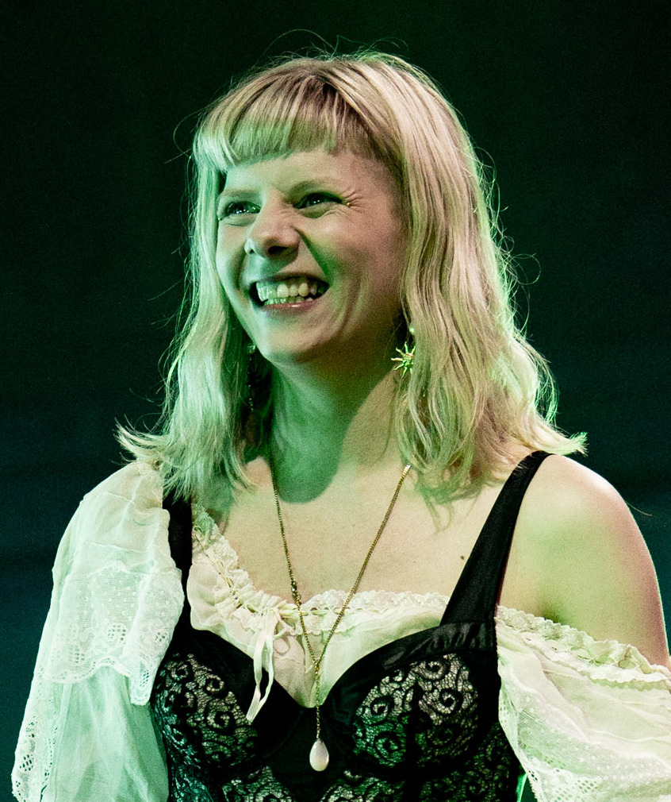
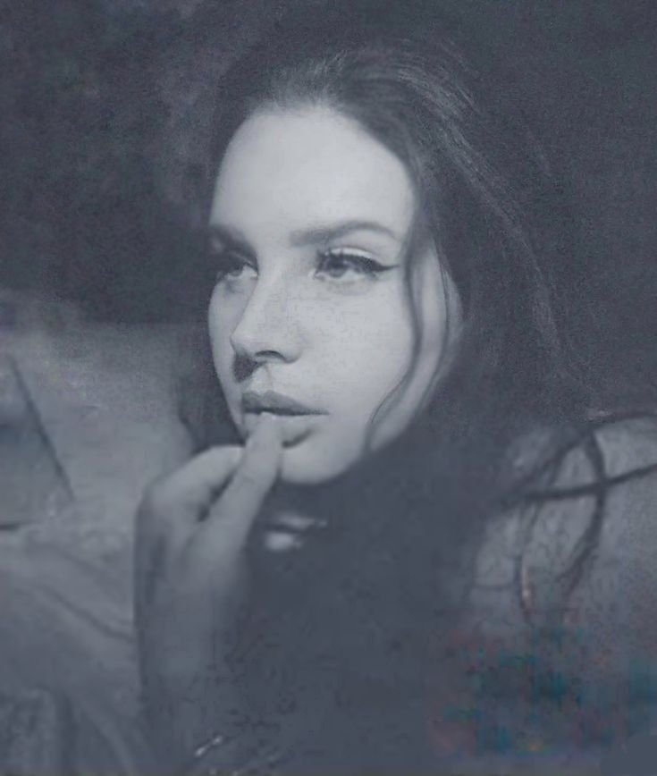
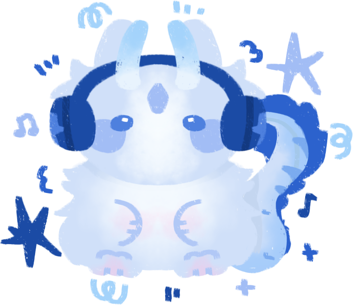
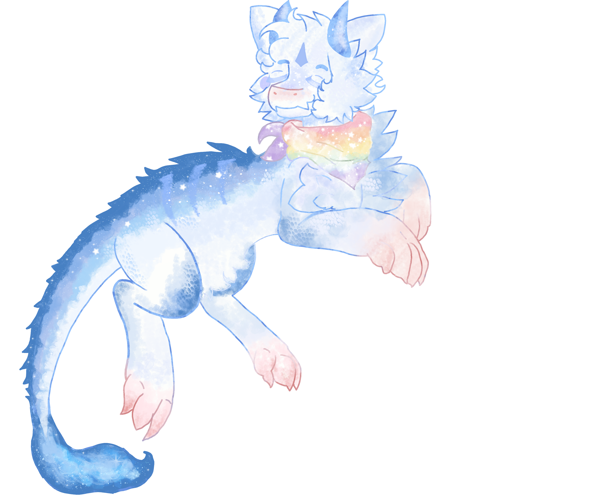
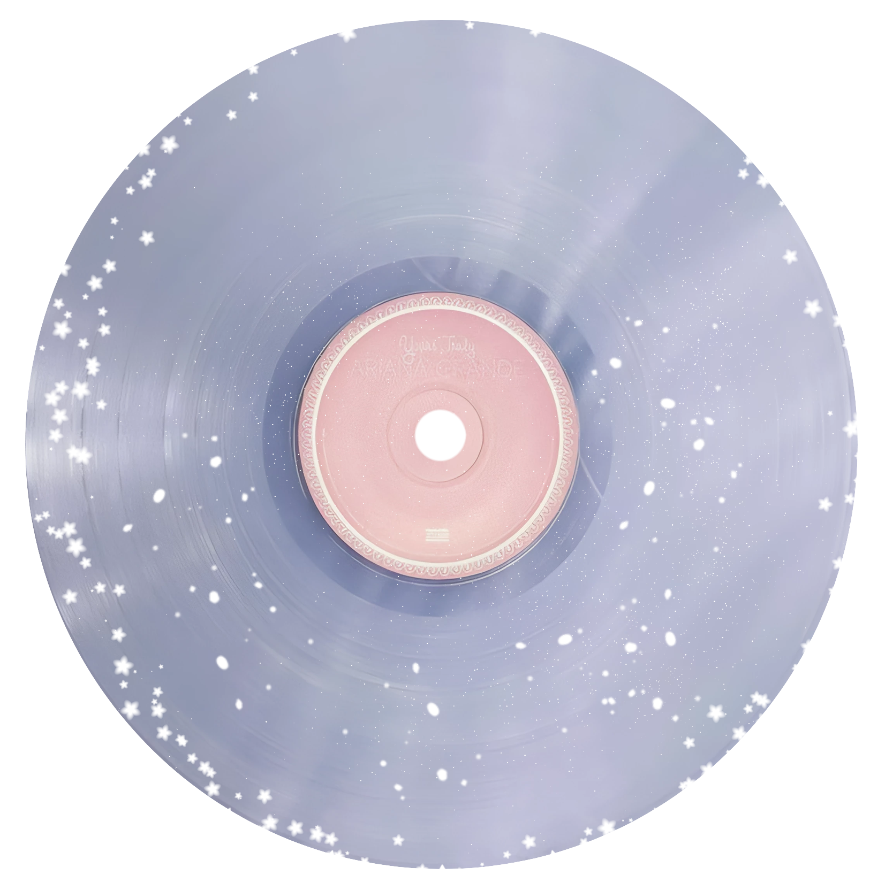

Why I Love Music
Music has always been my escape from reality, allowing me to explore emotions and worlds beyond my everyday experience. It creates a soundtrack to my life, enhancing both joyful moments and providing comfort during difficult times.
I love how music can transport me to different places and times, evoking memories with just a few notes. The way a melody can perfectly capture feelings I couldn't express with words is pure magic.
There's something about music that brings me happiness, you know? I'm a pretty passionate and hyperactive person, and music plays an important role in my life. It moves me, fills me with energy, and makes a feeling of energizing happiness run through my body! I love, love, love music with all my being. I feel it's something special about human beings and can't be replaced by anything. We humans create wonderful things, and I feel lucky to be able to live to witness all of that.
In case you didn't know, I love music and sounds so much that my main character, my blue dragon you see on screen, is actually a whale dragon! They're inspired by a humpback whale in their design and lore. Humpback whale songs are long, complex, and structured, with repeating patterns of low-frequency sounds that vary in amplitude and frequency! These songs consist of units, the shortest audible sound, a series of units making up a phrase, a series of phrases making up a theme, and a series of themes making up a song. An individual song can last up to 30 minutes and be repeated up to 24 hours. Isn't that beautiful?
My Musical Journey
My love for music began during childhood when I would listen to my parents' favorite songs. As I grew older, I started exploring different genres, from classical pieces that told stories without words to modern pop that defined my generation.
Over the years, my taste has evolved and expanded, but the feeling of discovering a new favorite song or artist remains just as thrilling as ever. Music continues to be the constant companion through all of life's adventures.

 Home
Home About me
About me Journal
Journal Music
Music  Video games
Video games Friends
Friends Guestbook
Guestbook FAQ
FAQ Hobbies
Hobbies Gallery
Gallery Kitty
Kitty Special events
Special events